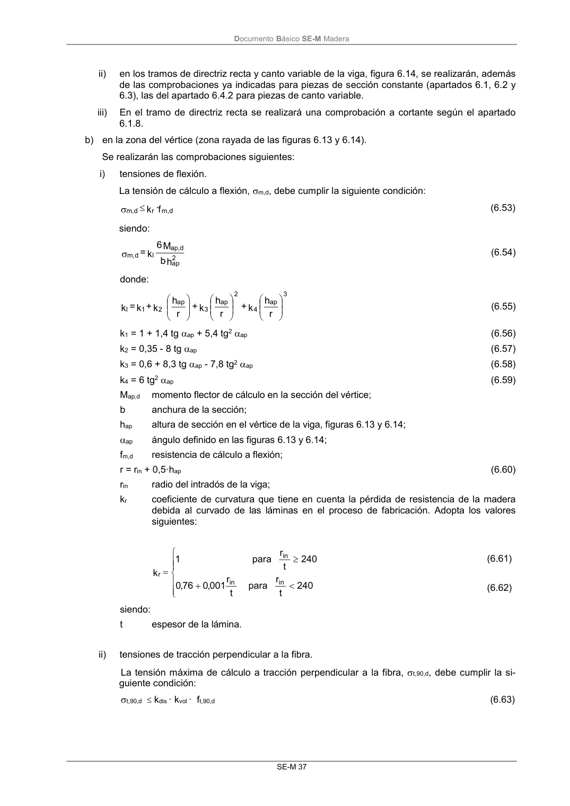

DB-SE-M Madera · edición 2019-12-20 · capa oficial
Documento DB-SE-M-oficial · SHA-256 del PDF 26b5819839ebfda78b0b119c5e76a0a37773b0d763c05688541870075df93718
Página física 43 de 132.
Copia fiel del PDF fuente · Fuente oficial
Ficha de la disposición en la fuente oficial
Formato: Texto de la página (Markdown)
Documento Básico SE-M Madera
SE-M 37
ii)
en los tramos de directriz recta y canto variable de la viga, figura 6.14, se realizarán, además
de las comprobaciones ya indicadas para piezas de sección constante (apartados 6.1, 6.2 y
6.3), las del apartado 6.4.2 para piezas de canto variable.
iii)
En el tramo de directriz recta se realizará una comprobación a cortante según el apartado
6.1.8.
b) en la zona del vértice (zona rayada de las figuras 6.13 y 6.14).
Se realizarán las comprobaciones siguientes:
i)
tensiones de flexión.
La tensión de cálculo a flexión, m,d, debe cumplir la siguiente condición:
f·
k
d
m,
r
d
m,
(6.53)
siendo:
h
b
M
6
k =
2
ap
d
ap,
l
d
m,
(6.54)
donde:
3
ap
4
2
ap
3
ap
2
1
l
r
h
k
+
r
h
k
+
r
h
k
+
k =
k
(6.55)
k1 = 1 + 1,4 tg ap + 5,4 tg2 ap
(6.56)
k2 = 0,35 - 8 tg ap
(6.57)
k3 = 0,6 + 8,3 tg ap - 7,8 tg2 ap
(6.58)
k4 = 6 tg2 ap
(6.59)
Map,d
momento flector de cálculo en la sección del vértice;
b
anchura de la sección;
hap
altura de sección en el vértice de la viga, figuras 6.13 y 6.14;
ap
ángulo definido en las figuras 6.13 y 6.14;
fm,d
resistencia de cálculo a flexión;
r = rin + 0,5·hap
(6.60)
rin
radio del intradós de la viga;
kr
coeficiente de curvatura que tiene en cuenta la pérdida de resistencia de la madera
debida al curvado de las láminas en el proceso de fabricación. Adopta los valores
siguientes:
240
t
r
para
t
r
001
,0
76
,0
240
t
r
para
1
k
in
in
in
r
(6.61)
(6.62)
siendo:
t
espesor de la lámina.
ii)
tensiones de tracción perpendicular a la fibra.
La tensión máxima de cálculo a tracción perpendicular a la fibra, t,90,d, debe cumplir la si-
guiente condición:
t,90,d kdis · kvol · ft,90,d
(6.63)
